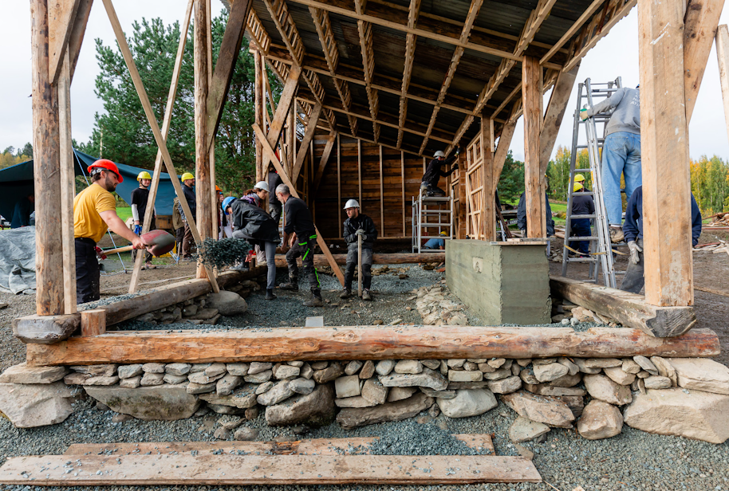
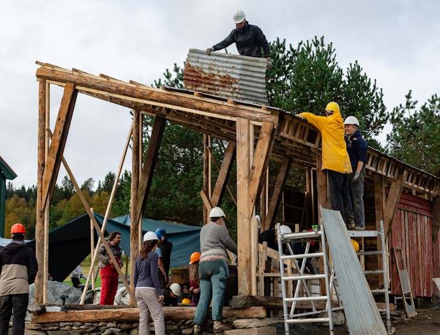

Prosjekter / Byggeprosjekt
Gjenbruksprosjekt i Skaun
I september 2023 deltok jeg på en to uker lang workshop i regi av arkitektstudiet, der vi rev et gammelt tilbygg på et fjøs og brukte materialene til å sette opp et nytt bygg et annet sted på tomten, med nye funksjoner og konstruksjonsprinsipper.
Arbeidet var spennende, og ga god praktisk erfaring med ombruk av eldre materialer. Hva man kan redde, hva må kasseres, og hvordan tilpasser man materialene man har til et nytt bygg? Eldre treverk har ofte mange gode kvaliteter, men krever at man er i stand til å vurdere dem.
Prosjektet var ikke uten utfordringer, men som læringsarena var det veldig lærerikt. Det ga meg også mye erfaring i å veilede totale nybegynnere i grunnleggende tømring og snekkerarbeid.
Man forstår materialers liv og alder på en annen måte når man håndterer dem fysisk over tid.


